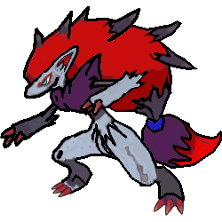

Night march leka ska ha fyra joltik, fyra pumpkaboo, fyra lampent och två pokemon som har ability kan ta attacker på bench/discard pile men det ska fortfarnade samma energy som attacken kostar. Viktiga tränare är battle compressor, . Svagheter med det är item lock, karen och ability blir stoppar.
Item lock, för att night march använder item så mycket om du stoppar item kan night march göra mycket skada till dina pokemon. Karen gör att ta upp alla pokemon i discard pile. För att night march måste göra om allting igen fast mindre item i lekan. Några pokemon stoppar andra pokemon ability. För att shaymin blir stoppar att refser handen. Den bild här på battle compressor saken. För att det hjälp att ta bort night march attacker ner till discard pile.
Night march leka ska ha fyra joltik, fyra pumpkaboo, fyra lampent och två pokemon som har ability kan ta attacker på bench/discard pile men det ska fortfarnade samma energy som attacken kostar. Viktiga tränare är battle compressor, . Svagheter med det är item lock, karen och ability blir stoppar.
Item lock, för att night march använder item så mycket om du stoppar item kan night march göra mycket skada till dina pokemon. Karen gör att ta upp alla pokemon i discard pile. För att night march måste göra om allting igen fast mindre item i lekan. Några pokemon stoppar andra pokemon ability. För att shaymin blir stoppar att refser handen. Den bild här på battle compressor saken. För att det hjälp att ta bort night march attacker ner till discard pile.
 Trevenant leka ska ha trevenant, phantump och jirachi. Jirachi har samma ablity som tapu lele men kan klafram med level ball menast tapu måste använda ultra ball. Viktgar tränare är vally, levelball, trainmail och switch. För att vally kan utveckla på första turn och kan dirket stoppar item. . Svagheter med det är dark och ingen effeckt när treveant är på benchen. För att trevenant är svaget mot dark typer. När du svitch eller motstånnder tving dig att byta pokemon blir abilten inge effekt längre.
Trevenant leka ska ha trevenant, phantump och jirachi. Jirachi har samma ablity som tapu lele men kan klafram med level ball menast tapu måste använda ultra ball. Viktgar tränare är vally, levelball, trainmail och switch. För att vally kan utveckla på första turn och kan dirket stoppar item. . Svagheter med det är dark och ingen effeckt när treveant är på benchen. För att trevenant är svaget mot dark typer. När du svitch eller motstånnder tving dig att byta pokemon blir abilten inge effekt längre.
 Zoroak Gx leak ska ha zoroak gx, zorua och tapu lele gx. Tapu lele gx hämta supperter kort. Tapu lele gx abilty hämta suppert kort i till din hand. Zoroak GX ablity gör att ta bort ett kort och drag två kort till din hand. Viktigaste tränare är birgett och sky flied. Zoroak Gx används mest suppert pokemon. För att zoroak abilit och får kort att vinna matchen. Också kan lägga duoblecoolser till din och gör mycket skada. Den har mycket liv att kan klara sig läger om man inte använda fighting typ. Svagheter med det är fighting typ. För att . Den här bilden på Zoroak ser inte ut som i spel. Men det ska köpa med riktaga pengar för att packet packet är bara i fysik packet men du kan byta med packet i spelet.